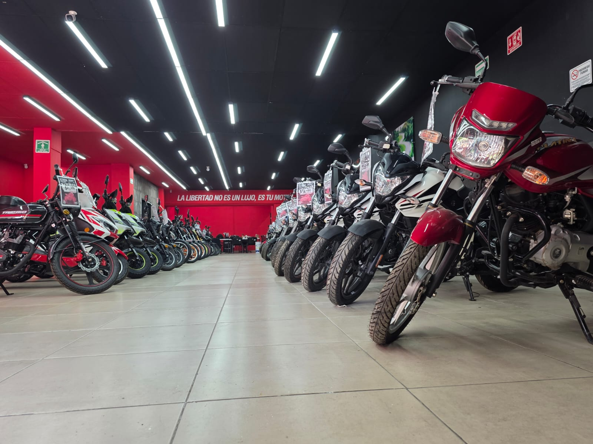

Venta · Distribución · Financiamiento de motos
Tu próxima moto
empieza aquí
RiderMex es una empresa mexicana de venta y distribución de motocicletas: catálogo multimarca, financiamiento con aprobación en aproximadamente 2 minutos y agencias físicas en CDMX y Estado de México.
- De un vistazo
- 11 marcas con catálogo en línea y 149 modelos publicados
- Aprobación en ~2 minutos solo con tu INE y sin aval
- 5 agencias en CDMX y Estado de México
¿Qué te trae a RiderMex?
Dos formas de avanzar con nosotros: comprar tu moto o participar en el crecimiento de la empresa. Elige la que va contigo.
Comprar una moto
Explora el catálogo completo: 149 modelos de 11 marcas con fotografías, ficha técnica y opciones de financiamiento con aprobación en aproximadamente 2 minutos.
- Eliges tu moto en el catálogo
- Solicitas tu crédito solo con tu INE
- Firmas en tu agencia y sales rodando
También puedes formar parte del crecimiento de RiderMex
RiderMex no sólo vende motocicletas. También puedes participar en el crecimiento de nuestra operación a través de modelos de inversión vinculados al desarrollo de nuestras agencias. Eliges el modelo que se adapte a tu perfil y, según sus condiciones, puedes acceder a rendimientos estimados.
- Eliges un modelo de inversión RiderMex
- Tu capital se integra a la operación de las agencias
- Accedes a rendimientos estimados según el modelo
Cómo compras tu moto
Un proceso simple y rápido: de elegir tu moto a salir rodando, sin vueltas ni papeleos eternos.
Elige tu moto
Explora el catálogo: 149 modelos de 11 marcas.
Aprobación con tu INE
Solicita tu crédito: aprobación en 2 minutos y sin aval.
Revisamos tus opciones
Un asesor confirma tu plan de pago y enganche.
Firma tu contrato
Formalizamos el proceso en la agencia más cercana.
Estrena tu moto
Entrega inmediata: sales rodando el mismo día.


PASO 01 / 05
PROCESO RIDERMEXTU CAMINO HACIA
TU MOTO
EMPIEZA AQUÍ
Desde el primer contacto, te acompañamos para entender qué moto buscas y cómo podemos ayudarte a avanzar.
PASO 02 / 05
ATENCIÓN PERSONALIZADATE ESCUCHAMOS Y
ENTENDEMOS LO QUE
NECESITAS
Revisamos tu perfil, tus opciones y el camino más claro para acercarte a la moto que quieres.
PASO 03 / 05
PROCESO CLAROPREPARAMOS TU
PROCESO DE FORMA
ORDENADA
Te guiamos con documentación, validación y contrato para que cada paso sea claro desde el inicio.
PASO 04 / 05
LISTO PARA ARRANCARTU MOTO,
LISTA PARA
ARRANCAR
Cerramos el proceso contigo y te acompañamos hasta que estés listo para subirte a tu nueva moto.
PASO 05 / 05
NUEVA RUTA DISPONIBLEPERO EL CAMINO
NO SE DETIENE
AQUÍ
Si este camino no es para ti, también puedes comenzar el camino de la inversión con RiderMex.
Segunda ruta · RiderMex Inversiones
Pero el camino no se detiene aquí
Más allá de vender motos, en RiderMex puedes participar en el crecimiento de la empresa: un modelo de inversión respaldado por operación real, agencias activas, contratos formales y fideicomiso.
Descubrir RiderMex Inversiones →Explora por marca
Distribuimos las marcas más buscadas del mercado. Haz clic en una marca para ver su catálogo completo.

Motos destacadas
Una selección de los modelos más buscados. Abre la ficha para ver especificaciones y solicitarla.


Ventajas que te hacen avanzar
Aprobación en 2 minutos
Solo con tu INE. Sin aval y sin trámites eternos.
Financiamiento a tu medida
Pagos semanales accesibles ajustados a tu bolsillo.
11 marcas en catálogo
149 modelos disponibles para elegir la moto ideal.
Entrega inmediata
Firmas y te la llevas el mismo día que apruebas.
5 agencias físicas
Naucalpan, CEDA, Coapa, Chalco y nuestra 5ª sucursal.
Sin enganche cuando aplica
Opciones de arranque flexibles según tu perfil.
Motos reales, tiendas reales
Cientos de riders ya estrenaron su moto con nosotros. Visítanos en cualquiera de nuestras 5 agencias: catálogo en piso, asesoría directa y entrega el mismo día.
Ver agencias →


Nuestras agencias
5 sucursales para atenderte de cerca. Consulta ubicación y horarios en cada una.
Lo que más nos preguntan
Dudas reales sobre comprar una moto, sacarla a crédito y encontrar tu agencia.
¿Dónde puedo comprar una moto a crédito en México?
En RiderMex puedes comprar una moto a crédito en cualquiera de nuestras 5 agencias de la Ciudad de México y el Estado de México, o iniciar el trámite en línea desde esta página.
Trabajamos con aliados financieros que originan el crédito, así que el proceso se resuelve en la misma agencia: eliges tu moto, solicitas el crédito y, si se aprueba, firmas y te la llevas. Puedes ver las direcciones de las agencias o empezar tu solicitud.
¿Qué necesito para sacar una moto a crédito?
Para iniciar tu solicitud en RiderMex necesitas tu INE vigente. No pedimos aval.
El proceso completo es así:
- Eliges el modelo en el catálogo.
- Solicitas el crédito con tu INE.
- Un asesor confirma tu plan de pago y tu enganche.
- Firmas el contrato en la agencia más cercana.
- Recibes tu moto.
Según tu perfil y la financiera que apruebe la operación, pueden solicitarse documentos adicionales; tu asesor te lo confirma antes de firmar.
¿Puedo comprar una moto sin enganche?
Hay opciones de arranque sin enganche, pero no aplican a todos los perfiles: dependen de la evaluación de la financiera y del modelo que elijas.
Cuando el esquema sin enganche no aplica, existen planes con enganche desde $2,299 y pagos semanales desde $199. La forma más rápida de saber qué te corresponde es enviar tu solicitud: la respuesta indica tu esquema real, no un supuesto.
¿Cuánto tarda la aprobación de un crédito para moto?
La aprobación puede realizarse en aproximadamente 2 minutos, solo con tu INE y sin aval.
Ese tiempo corresponde a la respuesta de la solicitud. Después viene la revisión del plan de pago con un asesor y la firma del contrato en la agencia, que suele completarse el mismo día. La aprobación depende de la evaluación de la financiera y no está garantizada.
¿Qué marcas de motos vende RiderMex?
RiderMex distribuye 11 marcas con catálogo publicado en línea: Bajaj, CF Lite, CF Moto, Carabela, Honda, Islo, Ryder, TVS, UM, Vento y Zmoto. Además incorporamos marcas nuevas conforme se suman al piso de venta.
Puedes entrar a cada marca desde el catálogo RiderMex y ver sus modelos con fotografías, características y ficha técnica.
¿Qué motos puedo comprar con financiamiento?
El financiamiento aplica sobre el catálogo RiderMex, que hoy reúne 149 modelos publicados entre motonetas, scooters, motos urbanas, doble propósito, custom, motocarros y cuatrimotos.
El monto financiable y el plan de pagos cambian según el modelo. Abre la ficha del modelo que te interesa y pulsa «Quiero esta moto»: la solicitud llega con el modelo ya identificado para que el asesor te dé condiciones concretas.
¿Dónde están las agencias de RiderMex?
RiderMex tiene 5 agencias: Naucalpan, Central de Abasto (CEDA), Coapa, Chalco y una quinta sucursal en operación.
- Naucalpan: Av. Dr. Gustavo Baz 98, Col. Alce Blanco, Naucalpan de Juárez, Edo. de México.
- CEDA: Canal de Tezontle 1500, Central de Abasto, Iztapalapa, CDMX.
- Coapa: Calz. de Tlalpan 3604, Huipulco, Tlalpan, CDMX.
- Chalco: Francisco Javier Mina 13, Chalco Centro, Chalco de Díaz Covarrubias, Edo. de México.
En la página de agencias están los horarios de cada una y su enlace directo a Google Maps. La dirección de la quinta sucursal se confirma con tu asesor al 55 1000 0680.
¿Qué moto me conviene para moverme en la ciudad?
Para uso urbano, el catálogo RiderMex agrupa los modelos pensados para ciudad en las categorías Ciudad, Urban Sport, Scooter, Motoneta y Street.
La forma práctica de decidir es abrir el catálogo, filtrar por la marca que te interesa y comparar en cada ficha la cilindrada, la transmisión y la categoría. Si quieres una recomendación aterrizada a tu trayecto y presupuesto, un asesor puede ayudarte en cualquiera de las agencias.
¿Qué moto me conviene para trabajar o repartir?
Para trabajo y reparto, revisa en el catálogo las categorías Trabajo, Utilitaria y Motocarro (de carga, de pasajeros, compacto o con caja hidráulica), además de las urbanas de cilindrada media.
Cada ficha indica categoría, cilindrada y transmisión, que son los datos que más pesan cuando la moto es una herramienta de ingreso. Compara los modelos que te interesen y solicita información del que se ajuste a tu operación.
¿Cómo puedo comparar marcas y modelos de motos antes de comprar?
El catálogo RiderMex está organizado en tres niveles para comparar sin perderte: catálogo → marca → ficha del modelo.
- Entra al catálogo y elige una marca (o busca por nombre de modelo).
- Revisa el grid de modelos de esa marca con su categoría y cilindrada.
- Abre la ficha del modelo: galería de fotos, características destacadas y ficha técnica completa, con la fuente oficial cuando existe.
Desde cualquier ficha puedes volver a la marca o pedir información del modelo sin repetir la búsqueda.
¿Tu duda no está aquí? Escríbenos o llama al 55 1000 0680.